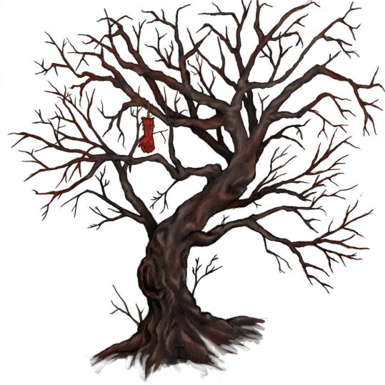

Akateko (folklore)

The Introduction
An akateko (赤手児, lit. "red handed child") is a yōkai, or Japanese monster, from the folklore of Aomori Prefecture, specifically in the city of Hachinohe. The monster is also a legend local to Kagawa and Fukushima prefectures.
Mythology
The monster is described as the red hand of a small child descending from a tree. It is accompanied by the specter of a young woman at the base of the tree whose beauty lulls unsuspecting passersby into a trance or fever state. the hand will then grab the traveler by the neck and rip them apart. limb by limb. In Kagawa and Fukushima prefectures, the spirit will travel in pairs, resembling moving feet or legs.
Comments Section